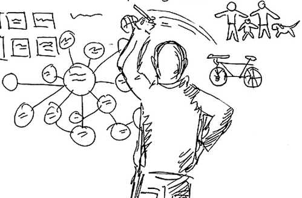
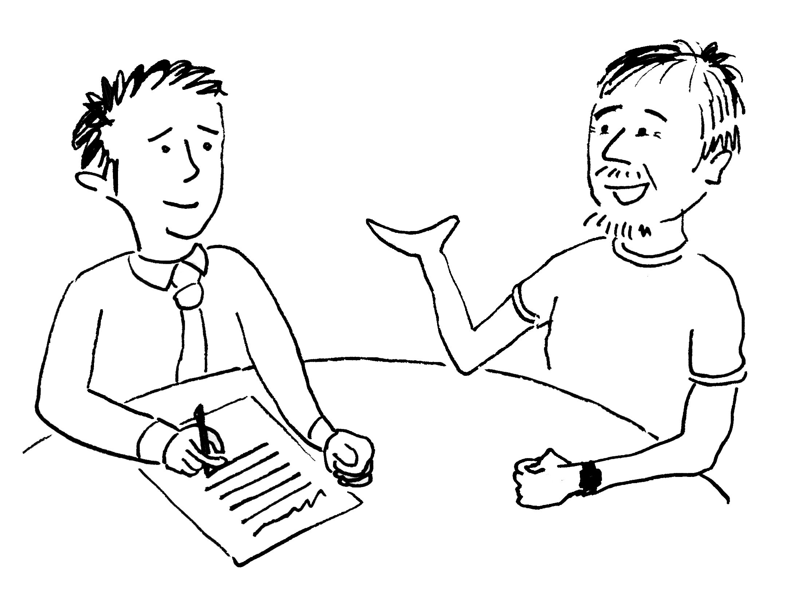
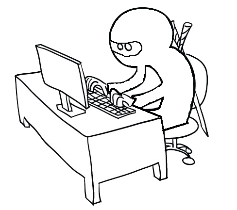
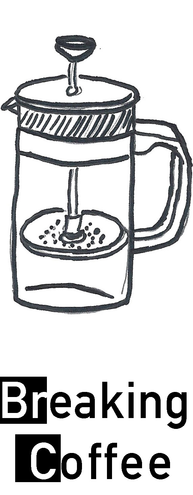
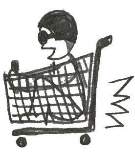

My Story
Born in the land of tandoori chicken, samosas, and biryani. I grew up playing and thinking I would become a professional cricket player. However, after exploring the creative side of my brain and realizing that creativity is today’s superpower, I pursued a career in human-computer interaction. Don’t we all dream of becoming a superhero️?My interest in human-centered design made me move to the beautiful city of Vancouver, to the School of Interactive Arts + Technology at Simon Fraser University where I learned and practiced human-centered design during my masters. Being away from my family and friends inspired me to explore the design space of connecting family members over distance.
What's your story? Shoot me an email
What I do and how I do it...
Having experienced different cultures around the world, looking at a problem from multiple perspectives has become my second nature. My medium agnostic design approach stems from my flexibility to work across digital and physical platforms and from my fluency with wide range of tools, methods, and processes that I am constantly adding to. I'm intensely interested in emerging technologies, ubiquitous computing systems, and user-centered design. Anything creative, when blended with technology and design becomes a magnet for me.

As a designer I like exploring all corners of the design space, thinking of design beyond the screen and challenging the conventional norms of design thinking.
As a designer I like exploring all corners of the design space, thinking of design beyond the screen and challenging the conventional norms of design thinking.

I design best when I work iteratively, by complementing the design process with user research. I seek to understand their behaviors, motivations, and desires to refine my design.
I design best when I work iteratively, by complementing the design process with user research. I seek to understand their behaviors, motivations, and desires to refine my design.

My engineering background allows my curious mind to tinker with emerging technologies to design and build prototypes and most importantly keep the geek inside me alive.
My engineering background allows my curious mind to tinker with emerging technologies to design and build prototypes and most importantly keep the geek inside me alive.
I'm a problem solver and an innovator building products to catch up to the future.
In my spare time...
I love being healthy! I run, lift weights, play squash, relish home-cooked food, and do as much as I can to counterbalance the time I spend in front of my laptop.Fun facts...

Coffee-Lab
Every morning I run a controlled lab study in my kitchen by experimenting variable such as temperature, grind, or the time.
Inspired by the chem-lab genius in Breaking Bad (No, I don't cook Meth),
Every morning I run a controlled lab study in my kitchen by experimenting variable such as temperature, grind, or the time.
Inspired by the chem-lab genius in Breaking Bad (No, I don't cook Meth),

Formula 1 Enthusiast
You can always find me practicing cornering techniques with my shopping cart in Costco.
You can always find me practicing cornering techniques with my shopping cart in Costco.
NCC Cadet
Served as a cadet during high-school (NCC: the third line of Indian Military Defense).
Served as a cadet during high-school (NCC: the third line of Indian Military Defense).